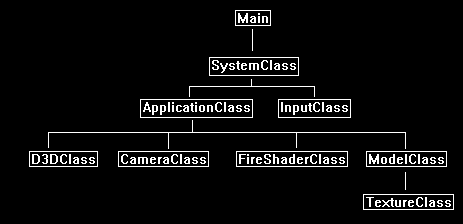

This tutorial will cover how to implement a fire shader in DirectX 11 using HLSL and C++.
The code in this tutorial is based on the previous tutorials.
One of the most realistic ways to create a fire effect in DirectX is to use a noise texture and to perturb the sampling of that texture in the same way we have for water, glass, and ice.
The only major difference is in the manipulation of the noise texture and the specific way we perturb the texture coordinates.
First start with a grey scale noise texture such as follows:

These noise textures can be procedurally generated with several different graphics manipulation programs.
The key is to produce one that has noise properties specific to a good-looking fire.
The second texture needed for fire effect will be a texture composed of fire colored noise and a flame outline.
For example, the following texture is composed of a texture that uses Perlin noise with fire colors and a texture of a small flame.
If you look closely at the middle bottom part of the texture you can see the umbra and penumbra of the flame:

And finally, you will need an alpha texture for transparency of the flame so that the final shape is very close to that of a small flame.
This can be rough as the perturbation will take care of making it take shape of a good flame:

Now that we have the three textures required for the fire effect, we can explain how the shader works.
The first thing we do is take the noise texture and create three separate textures from it.
The three separate textures are all based on the original noise texture except that they are scaled differently.
These scales are called octaves as they are simply repeated tiles of the original noise texture to create numerous more detailed noise textures.
The following three noise textures are scaled (tiled) by 1, 2, and 3:


We are also going to scroll all three noise textures upwards to create an upward moving noise which will correlate with a fire that burns upwards.
The scroll speed will be set differently for all three so that each moves at a different rate.
We will eventually combine the three noise textures so having them move at different rates adds dimension to the fire.
The next step is to convert the three noise textures from the (0, 1) range into the (-1, +1) range.
This has the effect of removing some of the noise and creating noise that looks closer to fire.
For example, the first noise texture now looks like the following:

With all three noise textures in the (-1, +1) range we can now add distortion to each texture along the x and y coordinates.
The distortion modifies the noise textures by scaling down the noise similar to how the refraction scale in the water, glass, and ice shaders did so.
Once each noise texture is distorted, we can then combine all three noise textures to produce a final noise texture.
Note that the distortion here is only applied to the x and y coordinates since we will be using them as a look up table for the x and y texture sampling just like we do with normal maps.
The z coordinate is ignored as it has no use when sampling textures in 2D.
Remember also that each frame the three noise textures are scrolling upwards at different rates so combining them creates an almost organized flowing noise that looks like fire.
Now the next very important step is to perturb the original fire color texture.
In other shaders such as water, glass, and ice we usually use a normal map at this point to perturb the texture sampling coordinates.
However, in fire we use the noise as our perturbed texture sampling coordinates.
But before we do that, we want to also perturb the noise itself.
We will use a distortion scale and bias to distort the noise higher at the top of the texture and less at the bottom of the texture to create a solid flame at the base and flame licks at the top.
In other words, we perturb the noise along the Y axis using an increased amount of distortion as we go up the noise texture from the bottom.
We now use the perturbed final noise texture as our look up table for texture sampling coordinates that will be used to sample the fire color texture.
Note that we use Clamp instead of Wrap for the fire color texture wrapping, otherwise we will get flame licks wrapping around to the bottom which would ruin the look.
The fire color texture sampled using the perturbed noise now looks like the following:

Now that we have an animated burning square that looks fairly realistic, we need a way of shaping it into more of a flame.
To do so we turn on blending and use the alpha texture we created earlier.
The trick is to sample the alpha texture using the same perturbed noise to make the alpha look like a burning flame.
We also need to use Clamp instead of Wrap for the sampling to prevent the flames from wrapping around to the bottom.
When we do so we get the following result from the sampled perturbed alpha:

To complete the effect, we set the perturbed alpha value to be the alpha channel of the perturbed fire color texture and the blending takes care of the rest:

When you see this effect animated it looks incredibly realistic.
Framework
The framework has one new class called FireShaderClass which is just the TextureShaderClass updated for the fire effect.

We will start the code section by examining the HLSL fire shader.
Fire.vs
////////////////////////////////////////////////////////////////////////////////
// Filename: fire.vs
////////////////////////////////////////////////////////////////////////////////
/////////////
// GLOBALS //
/////////////
cbuffer MatrixBuffer
{
matrix worldMatrix;
matrix viewMatrix;
matrix projectionMatrix;
};
For the vertex shader we create a new constant buffer that will contain the values needed for calculations each frame.
The first variable called frameTime is updated each frame so the shader has access to an incremental time that is used for scrolling the different noise textures.
The second variable scrollSpeeds is a 3-float array that contains three different scrolling speeds.
The x value is the scroll speed for the first noise texture.
The y value is the scroll speed for the second noise texture.
And the z value is the scroll speed for the third noise texture.
The third variable scales is a 3-float array that contains three different scales (or octaves) for the three different noise textures.
The x, y, and z values of scales is generally set to 1, 2, and 3.
This will make the first noise texture a single tile.
It also makes the second noise texture tiled twice in both directions.
And finally, it makes the third noise texture tiled three times in both directions.
The last variable is called padding.
It is a single float that is used to make the NoiseBuffer a size that is divisible by 16.
Padding will generally just be set to 0.0f.
cbuffer NoiseBuffer
{
float frameTime;
float3 scrollSpeeds;
float3 scales;
float padding;
};
//////////////
// TYPEDEFS //
//////////////
struct VertexInputType
{
float4 position : POSITION;
float2 tex : TEXCOORD0;
};
The PixelInputType structure has been changed to take three different texture coordinates.
We use it for sampling the same noise texture in three different ways to basically create three different noise textures from one.
struct PixelInputType
{
float4 position : SV_POSITION;
float2 tex : TEXCOORD0;
float2 texCoords1 : TEXCOORD1;
float2 texCoords2 : TEXCOORD2;
float2 texCoords3 : TEXCOORD3;
};
////////////////////////////////////////////////////////////////////////////////
// Vertex Shader
////////////////////////////////////////////////////////////////////////////////
PixelInputType FireVertexShader(VertexInputType input)
{
PixelInputType output;
// Change the position vector to be 4 units for proper matrix calculations.
input.position.w = 1.0f;
// Calculate the position of the vertex against the world, view, and projection matrices.
output.position = mul(input.position, worldMatrix);
output.position = mul(output.position, viewMatrix);
output.position = mul(output.position, projectionMatrix);
// Store the texture coordinates for the pixel shader.
output.tex = input.tex;
Here is where we create three different texture sampling values so that the same noise texture can be used to create three different noise textures.
For each texture coordinate we first scale it by the scale value which then tiles the texture a number of times depending on the value in the scales array.
After that we scroll the three different y coordinates upwards using the frame time and the value in the scrollSpeeds array.
The scroll speed for all three will be different which gives the fire dimension.
// Compute texture coordinates for first noise texture using the first scale and upward scrolling speed values.
output.texCoords1 = (input.tex * scales.x);
output.texCoords1.y = output.texCoords1.y + (frameTime * scrollSpeeds.x);
// Compute texture coordinates for second noise texture using the second scale and upward scrolling speed values.
output.texCoords2 = (input.tex * scales.y);
output.texCoords2.y = output.texCoords2.y + (frameTime * scrollSpeeds.y);
// Compute texture coordinates for third noise texture using the third scale and upward scrolling speed values.
output.texCoords3 = (input.tex * scales.z);
output.texCoords3.y = output.texCoords3.y + (frameTime * scrollSpeeds.z);
return output;
}
Fire.ps
////////////////////////////////////////////////////////////////////////////////
// Filename: fire.ps
////////////////////////////////////////////////////////////////////////////////
/////////////
// GLOBALS //
/////////////
The three textures for the fire effect are the fire color texture, the noise texture, and the alpha texture.
Texture2D fireTexture : register(t0);
Texture2D noiseTexture : register(t1);
Texture2D alphaTexture : register(t2);
We add a second sample state that uses Clamp. The Wrap used in the first sample state would cause the fire to wrap around which ruins the effect.
SamplerState SampleTypeWrap : register(s0);
SamplerState SampleTypeClamp : register(s1);
The pixel shader has a constant buffer called DistorionBuffer which contains the values needed by the pixel shader to create the fire effect.
The three distortion arrays in the buffer contain a x and y value for distorting the three different noise textures by individual x and y parameters.
The distortion scale and bias values in the DistortionBuffer are used for perturbing the final combined noise texture to make it take the shape of a flame.
cbuffer DistortionBuffer
{
float2 distortion1;
float2 distortion2;
float2 distortion3;
float distortionScale;
float distortionBias;
};
//////////////
// TYPEDEFS //
//////////////
struct PixelInputType
{
float4 position : SV_POSITION;
float2 tex : TEXCOORD0;
float2 texCoords1 : TEXCOORD1;
float2 texCoords2 : TEXCOORD2;
float2 texCoords3 : TEXCOORD3;
};
////////////////////////////////////////////////////////////////////////////////
// Pixel Shader
////////////////////////////////////////////////////////////////////////////////
float4 FirePixelShader(PixelInputType input) : SV_TARGET
{
float4 noise1;
float4 noise2;
float4 noise3;
float4 finalNoise;
float perturb;
float2 noiseCoords;
float4 fireColor;
float4 alphaColor;
First create three different noise values by sampling the noise texture three different ways.
Afterward move the texture pixel value into the (-1, +1) range.
// Sample the same noise texture using the three different texture coordinates to get three different noise scales.
noise1 = noiseTexture.Sample(SampleTypeWrap, input.texCoords1);
noise2 = noiseTexture.Sample(SampleTypeWrap, input.texCoords2);
noise3 = noiseTexture.Sample(SampleTypeWrap, input.texCoords3);
// Move the noise from the (0, 1) range to the (-1, +1) range.
noise1 = (noise1 - 0.5f) * 2.0f;
noise2 = (noise2 - 0.5f) * 2.0f;
noise3 = (noise3 - 0.5f) * 2.0f;
Now scale down the x and y sampling coordinates by the distortion amount.
After they are distorted all three texture values are combined into a single value which represents the final noise value for this pixel.
// Distort the three noise x and y coordinates by the three different distortion x and y values.
noise1.xy = noise1.xy * distortion1.xy;
noise2.xy = noise2.xy * distortion2.xy;
noise3.xy = noise3.xy * distortion3.xy;
// Combine all three distorted noise results into a single noise result.
finalNoise = noise1 + noise2 + noise3;
We now perturb the final noise result to create a fire look to the overall noise texture.
Note that we perturb it more at the top and less as it moves to the bottom.
This creates a flickering flame at the top and as it progresses downwards it creates a more solid flame base.
// Perturb the input texture Y coordinates by the distortion scale and bias values.
// The perturbation gets stronger as you move up the texture which creates the flame flickering at the top effect.
perturb = ((1.0f - input.tex.y) * distortionScale) + distortionBias;
// Now create the perturbed and distorted texture sampling coordinates that will be used to sample the fire color texture.
noiseCoords.xy = (finalNoise.xy * perturb) + input.tex.xy;
Sample both the fire color texture and the alpha texture by the perturbed noise sampling coordinates to create the fire effect.
// Sample the color from the fire texture using the perturbed and distorted texture sampling coordinates.
// Use the clamping sample state instead of the wrap sample state to prevent flames wrapping around.
fireColor = fireTexture.Sample(SampleTypeClamp, noiseCoords.xy);
// Sample the alpha value from the alpha texture using the perturbed and distorted texture sampling coordinates.
// This will be used for transparency of the fire.
// Use the clamping sample state instead of the wrap sample state to prevent flames wrapping around.
alphaColor = alphaTexture.Sample(SampleTypeClamp, noiseCoords.xy);
Combine the alpha and the fire color to create the transparent blended final fire effect.
// Set the alpha blending of the fire to the perturbed and distored alpha texture value.
fireColor.a = alphaColor;
return fireColor;
}
Fireshaderclass.h
The FireShaderClass is just the TextureShaderClass modified for the fire effect.
////////////////////////////////////////////////////////////////////////////////
// Filename: fireshaderclass.h
////////////////////////////////////////////////////////////////////////////////
#ifndef _FIRESHADERCLASS_H_
#define _FIRESHADERCLASS_H_
//////////////
// INCLUDES //
//////////////
#include <d3d11.h>
#include <d3dcompiler.h>
#include <directxmath.h>
#include <fstream>
using namespace DirectX;
using namespace std;
////////////////////////////////////////////////////////////////////////////////
// Class name: FireShaderClass
////////////////////////////////////////////////////////////////////////////////
class FireShaderClass
{
private:
struct MatrixBufferType
{
XMMATRIX world;
XMMATRIX view;
XMMATRIX projection;
};
The vertex shader has a constant buffer with variables for calculating noise so we need to create a structure that mirrors it so that we can set those values.
This structure contains the frame speed, the three different scroll speeds, and the three different noise scales.
The structure also has a padding variable that is used to make the structure a multiple of 16 which is a requirement for when the noise buffer is created.
struct NoiseBufferType
{
float frameTime;
XMFLOAT3 scrollSpeeds;
XMFLOAT3 scales;
float padding;
};
The pixel shader also has a constant buffer with variables used for distorting the noise values to create the fire effect.
This new structure is used in conjunction with a buffer to set the values in the pixel shader.
The structure contains the three distortion arrays and the distortion scale and bias.
struct DistortionBufferType
{
XMFLOAT2 distortion1;
XMFLOAT2 distortion2;
XMFLOAT2 distortion3;
float distortionScale;
float distortionBias;
};
public:
FireShaderClass();
FireShaderClass(const FireShaderClass&);
~FireShaderClass();
bool Initialize(ID3D11Device*, HWND);
void Shutdown();
bool Render(ID3D11DeviceContext*, int, XMMATRIX, XMMATRIX, XMMATRIX, ID3D11ShaderResourceView*, ID3D11ShaderResourceView*, ID3D11ShaderResourceView*, float,
XMFLOAT3, XMFLOAT3, XMFLOAT2, XMFLOAT2, XMFLOAT2, float, float);
private:
bool InitializeShader(ID3D11Device*, HWND, WCHAR*, WCHAR*);
void ShutdownShader();
void OutputShaderErrorMessage(ID3D10Blob*, HWND, WCHAR*);
bool SetShaderParameters(ID3D11DeviceContext*, XMMATRIX, XMMATRIX, XMMATRIX, ID3D11ShaderResourceView*, ID3D11ShaderResourceView*, ID3D11ShaderResourceView*,
float, XMFLOAT3, XMFLOAT3, XMFLOAT2, XMFLOAT2, XMFLOAT2, float, float);
void RenderShader(ID3D11DeviceContext*, int);
private:
ID3D11VertexShader* m_vertexShader;
ID3D11PixelShader* m_pixelShader;
ID3D11InputLayout* m_layout;
ID3D11Buffer* m_matrixBuffer;
We have a new buffer for the noise constant buffer in the vertex shader.
ID3D11Buffer* m_noiseBuffer;
Also, there is a new distortion buffer for the distortion constant buffer in the pixel shader.
ID3D11Buffer* m_distortionBuffer;
ID3D11SamplerState* m_sampleStateWrap;
There is a new sampler state which will use Clamp instead of Wrap for the fire effect.
ID3D11SamplerState* m_sampleStateClamp;
};
#endif
Fireshaderclass.cpp
////////////////////////////////////////////////////////////////////////////////
// Filename: fireshaderclass.cpp
////////////////////////////////////////////////////////////////////////////////
#include "fireshaderclass.h"
All the private pointers in the class are initialized to null in the class constructor.
FireShaderClass::FireShaderClass()
{
m_vertexShader = 0;
m_pixelShader = 0;
m_layout = 0;
m_matrixBuffer = 0;
m_noiseBuffer = 0;
m_distortionBuffer = 0;
m_sampleStateWrap = 0;
m_sampleStateClamp = 0;
}
FireShaderClass::FireShaderClass(const FireShaderClass& other)
{
}
FireShaderClass::~FireShaderClass()
{
}
bool FireShaderClass::Initialize(ID3D11Device* device, HWND hwnd)
{
wchar_t vsFilename[128], psFilename[128];
int error;
bool result;
We load the fire.vs and fire.ps HLSL shader files here.
// Set the filename of the vertex shader.
error = wcscpy_s(vsFilename, 128, L"../Engine/fire.vs");
if(error != 0)
{
return false;
}
// Set the filename of the pixel shader.
error = wcscpy_s(psFilename, 128, L"../Engine/fire.ps");
if(error != 0)
{
return false;
}
// Initialize the vertex and pixel shaders.
result = InitializeShader(device, hwnd, vsFilename, psFilename);
if(!result)
{
return false;
}
return true;
}
void FireShaderClass::Shutdown()
{
// Shutdown the vertex and pixel shaders as well as the related objects.
ShutdownShader();
return;
}
The Render function takes in all the numerous input variables that are used to render and tweak the look of the fire.
They are first set in the shader using the SetShaderParameters function.
Once all the values are set the shader is used for rendering by then calling the RenderShader function.
bool FireShaderClass::Render(ID3D11DeviceContext* deviceContext, int indexCount, XMMATRIX worldMatrix, XMMATRIX viewMatrix, XMMATRIX projectionMatrix,
ID3D11ShaderResourceView* fireTexture, ID3D11ShaderResourceView* noiseTexture, ID3D11ShaderResourceView* alphaTexture, float frameTime,
XMFLOAT3 scrollSpeeds, XMFLOAT3 scales, XMFLOAT2 distortion1, XMFLOAT2 distortion2, XMFLOAT2 distortion3,
float distortionScale, float distortionBias)
{
bool result;
// Set the shader parameters that it will use for rendering.
result = SetShaderParameters(deviceContext, worldMatrix, viewMatrix, projectionMatrix, fireTexture, noiseTexture, alphaTexture, frameTime,
scrollSpeeds, scales, distortion1, distortion2, distortion3, distortionScale, distortionBias);
if(!result)
{
return false;
}
// Now render the prepared buffers with the shader.
RenderShader(deviceContext, indexCount);
return true;
}
bool FireShaderClass::InitializeShader(ID3D11Device* device, HWND hwnd, WCHAR* vsFilename, WCHAR* psFilename)
{
HRESULT result;
ID3D10Blob* errorMessage;
ID3D10Blob* vertexShaderBuffer;
ID3D10Blob* pixelShaderBuffer;
D3D11_INPUT_ELEMENT_DESC polygonLayout[2];
unsigned int numElements;
D3D11_BUFFER_DESC matrixBufferDesc;
D3D11_BUFFER_DESC noiseBufferDesc;
D3D11_BUFFER_DESC distortionBufferDesc;
D3D11_SAMPLER_DESC samplerDescWrap;
D3D11_SAMPLER_DESC samplerDescClamp;
// Initialize the pointers this function will use to null.
errorMessage = 0;
vertexShaderBuffer = 0;
pixelShaderBuffer = 0;
Load the fire vertex shader.
// Compile the vertex shader code.
result = D3DCompileFromFile(vsFilename, NULL, NULL, "FireVertexShader", "vs_5_0", D3D10_SHADER_ENABLE_STRICTNESS, 0,
&vertexShaderBuffer, &errorMessage);
if(FAILED(result))
{
// If the shader failed to compile it should have writen something to the error message.
if(errorMessage)
{
OutputShaderErrorMessage(errorMessage, hwnd, vsFilename);
}
// If there was nothing in the error message then it simply could not find the shader file itself.
else
{
MessageBox(hwnd, vsFilename, L"Missing Shader File", MB_OK);
}
return false;
}
Load the fire pixel shader.
// Compile the pixel shader code.
result = D3DCompileFromFile(psFilename, NULL, NULL, "FirePixelShader", "ps_5_0", D3D10_SHADER_ENABLE_STRICTNESS, 0,
&pixelShaderBuffer, &errorMessage);
if(FAILED(result))
{
// If the shader failed to compile it should have writen something to the error message.
if(errorMessage)
{
OutputShaderErrorMessage(errorMessage, hwnd, psFilename);
}
// If there was nothing in the error message then it simply could not find the file itself.
else
{
MessageBox(hwnd, psFilename, L"Missing Shader File", MB_OK);
}
return false;
}
// Create the vertex shader from the buffer.
result = device->CreateVertexShader(vertexShaderBuffer->GetBufferPointer(), vertexShaderBuffer->GetBufferSize(), NULL, &m_vertexShader);
if(FAILED(result))
{
return false;
}
// Create the pixel shader from the buffer.
result = device->CreatePixelShader(pixelShaderBuffer->GetBufferPointer(), pixelShaderBuffer->GetBufferSize(), NULL, &m_pixelShader);
if(FAILED(result))
{
return false;
}
// Create the vertex input layout description.
polygonLayout[0].SemanticName = "POSITION";
polygonLayout[0].SemanticIndex = 0;
polygonLayout[0].Format = DXGI_FORMAT_R32G32B32_FLOAT;
polygonLayout[0].InputSlot = 0;
polygonLayout[0].AlignedByteOffset = 0;
polygonLayout[0].InputSlotClass = D3D11_INPUT_PER_VERTEX_DATA;
polygonLayout[0].InstanceDataStepRate = 0;
polygonLayout[1].SemanticName = "TEXCOORD";
polygonLayout[1].SemanticIndex = 0;
polygonLayout[1].Format = DXGI_FORMAT_R32G32_FLOAT;
polygonLayout[1].InputSlot = 0;
polygonLayout[1].AlignedByteOffset = D3D11_APPEND_ALIGNED_ELEMENT;
polygonLayout[1].InputSlotClass = D3D11_INPUT_PER_VERTEX_DATA;
polygonLayout[1].InstanceDataStepRate = 0;
// Get a count of the elements in the layout.
numElements = sizeof(polygonLayout) / sizeof(polygonLayout[0]);
// Create the vertex input layout.
result = device->CreateInputLayout(polygonLayout, numElements, vertexShaderBuffer->GetBufferPointer(),
vertexShaderBuffer->GetBufferSize(), &m_layout);
if(FAILED(result))
{
return false;
}
// Release the vertex shader buffer and pixel shader buffer since they are no longer needed.
vertexShaderBuffer->Release();
vertexShaderBuffer = 0;
pixelShaderBuffer->Release();
pixelShaderBuffer = 0;
// Setup the description of the dynamic matrix constant buffer that is in the vertex shader.
matrixBufferDesc.Usage = D3D11_USAGE_DYNAMIC;
matrixBufferDesc.ByteWidth = sizeof(MatrixBufferType);
matrixBufferDesc.BindFlags = D3D11_BIND_CONSTANT_BUFFER;
matrixBufferDesc.CPUAccessFlags = D3D11_CPU_ACCESS_WRITE;
matrixBufferDesc.MiscFlags = 0;
matrixBufferDesc.StructureByteStride = 0;
// Create the constant buffer pointer so we can access the vertex shader constant buffer from within this class.
result = device->CreateBuffer(&matrixBufferDesc, NULL, &m_matrixBuffer);
if(FAILED(result))
{
return false;
}
Setup and create the new noise buffer.
// Setup the description of the dynamic noise constant buffer that is in the vertex shader.
noiseBufferDesc.Usage = D3D11_USAGE_DYNAMIC;
noiseBufferDesc.ByteWidth = sizeof(NoiseBufferType);
noiseBufferDesc.BindFlags = D3D11_BIND_CONSTANT_BUFFER;
noiseBufferDesc.CPUAccessFlags = D3D11_CPU_ACCESS_WRITE;
noiseBufferDesc.MiscFlags = 0;
noiseBufferDesc.StructureByteStride = 0;
// Create the constant buffer pointer so we can access the vertex shader constant buffer from within this class.
result = device->CreateBuffer(&noiseBufferDesc, NULL, &m_noiseBuffer);
if(FAILED(result))
{
return false;
}
Setup and create the new distortion buffer.
// Setup the description of the dynamic distortion constant buffer that is in the pixel shader.
distortionBufferDesc.Usage = D3D11_USAGE_DYNAMIC;
distortionBufferDesc.ByteWidth = sizeof(DistortionBufferType);
distortionBufferDesc.BindFlags = D3D11_BIND_CONSTANT_BUFFER;
distortionBufferDesc.CPUAccessFlags = D3D11_CPU_ACCESS_WRITE;
distortionBufferDesc.MiscFlags = 0;
distortionBufferDesc.StructureByteStride = 0;
// Create the constant buffer pointer so we can access the pixel shader constant buffer from within this class.
result = device->CreateBuffer(&distortionBufferDesc, NULL, &m_distortionBuffer);
if(FAILED(result))
{
return false;
}
// Create a wrap texture sampler state description.
samplerDescWrap.Filter = D3D11_FILTER_MIN_MAG_MIP_LINEAR;
samplerDescWrap.AddressU = D3D11_TEXTURE_ADDRESS_WRAP;
samplerDescWrap.AddressV = D3D11_TEXTURE_ADDRESS_WRAP;
samplerDescWrap.AddressW = D3D11_TEXTURE_ADDRESS_WRAP;
samplerDescWrap.MipLODBias = 0.0f;
samplerDescWrap.MaxAnisotropy = 1;
samplerDescWrap.ComparisonFunc = D3D11_COMPARISON_ALWAYS;
samplerDescWrap.BorderColor[0] = 0;
samplerDescWrap.BorderColor[1] = 0;
samplerDescWrap.BorderColor[2] = 0;
samplerDescWrap.BorderColor[3] = 0;
samplerDescWrap.MinLOD = 0;
samplerDescWrap.MaxLOD = D3D11_FLOAT32_MAX;
// Create the texture sampler state.
result = device->CreateSamplerState(&samplerDescWrap, &m_sampleStateWrap);
if(FAILED(result))
{
return false;
}
Setup and create the new sampler state that uses CLAMP instead of WRAP.
// Create a clamp texture sampler state description.
samplerDescClamp.Filter = D3D11_FILTER_MIN_MAG_MIP_LINEAR;
samplerDescClamp.AddressU = D3D11_TEXTURE_ADDRESS_CLAMP;
samplerDescClamp.AddressV = D3D11_TEXTURE_ADDRESS_CLAMP;
samplerDescClamp.AddressW = D3D11_TEXTURE_ADDRESS_CLAMP;
samplerDescClamp.MipLODBias = 0.0f;
samplerDescClamp.MaxAnisotropy = 1;
samplerDescClamp.ComparisonFunc = D3D11_COMPARISON_ALWAYS;
samplerDescClamp.BorderColor[0] = 0;
samplerDescClamp.BorderColor[1] = 0;
samplerDescClamp.BorderColor[2] = 0;
samplerDescClamp.BorderColor[3] = 0;
samplerDescClamp.MinLOD = 0;
samplerDescClamp.MaxLOD = D3D11_FLOAT32_MAX;
// Create the texture sampler state.
result = device->CreateSamplerState(&samplerDescClamp, &m_sampleStateClamp);
if(FAILED(result))
{
return false;
}
return true;
}
void FireShaderClass::ShutdownShader()
{
The ShutdownShader function releases all the pointers that were used to access values inside the fire shader.
// Release the sampler states.
if(m_sampleStateClamp)
{
m_sampleStateClamp->Release();
m_sampleStateClamp = 0;
}
if(m_sampleStateWrap)
{
m_sampleStateWrap->Release();
m_sampleStateWrap = 0;
}
// Release the distortion constant buffer.
if(m_distortionBuffer)
{
m_distortionBuffer->Release();
m_distortionBuffer = 0;
}
// Release the noise constant buffer.
if(m_noiseBuffer)
{
m_noiseBuffer->Release();
m_noiseBuffer = 0;
}
// Release the matrix constant buffer.
if(m_matrixBuffer)
{
m_matrixBuffer->Release();
m_matrixBuffer = 0;
}
// Release the layout.
if(m_layout)
{
m_layout->Release();
m_layout = 0;
}
// Release the pixel shader.
if(m_pixelShader)
{
m_pixelShader->Release();
m_pixelShader = 0;
}
// Release the vertex shader.
if(m_vertexShader)
{
m_vertexShader->Release();
m_vertexShader = 0;
}
return;
}
void FireShaderClass::OutputShaderErrorMessage(ID3D10Blob* errorMessage, HWND hwnd, WCHAR* shaderFilename)
{
char* compileErrors;
unsigned long long bufferSize, i;
ofstream fout;
// Get a pointer to the error message text buffer.
compileErrors = (char*)(errorMessage->GetBufferPointer());
// Get the length of the message.
bufferSize = errorMessage->GetBufferSize();
// Open a file to write the error message to.
fout.open("shader-error.txt");
// Write out the error message.
for(i=0; i<bufferSize; i++)
{
fout << compileErrors[i];
}
// Close the file.
fout.close();
// Release the error message.
errorMessage->Release();
errorMessage = 0;
// Pop a message up on the screen to notify the user to check the text file for compile errors.
MessageBox(hwnd, L"Error compiling shader. Check shader-error.txt for message.", shaderFilename, MB_OK);
return;
}
bool FireShaderClass::SetShaderParameters(ID3D11DeviceContext* deviceContext, XMMATRIX worldMatrix, XMMATRIX viewMatrix, XMMATRIX projectionMatrix,
ID3D11ShaderResourceView* fireTexture, ID3D11ShaderResourceView* noiseTexture, ID3D11ShaderResourceView* alphaTexture,
float frameTime, XMFLOAT3 scrollSpeeds, XMFLOAT3 scales, XMFLOAT2 distortion1, XMFLOAT2 distortion2, XMFLOAT2 distortion3,
float distortionScale, float distortionBias)
{
HRESULT result;
D3D11_MAPPED_SUBRESOURCE mappedResource;
MatrixBufferType* dataPtr;
NoiseBufferType* dataPtr2;
DistortionBufferType* dataPtr3;
unsigned int bufferNumber;
// Transpose the matrices to prepare them for the shader.
worldMatrix = XMMatrixTranspose(worldMatrix);
viewMatrix = XMMatrixTranspose(viewMatrix);
projectionMatrix = XMMatrixTranspose(projectionMatrix);
Set the matrix buffer in the vertex shader as usual.
// Lock the constant buffer so it can be written to.
result = deviceContext->Map(m_matrixBuffer, 0, D3D11_MAP_WRITE_DISCARD, 0, &mappedResource);
if(FAILED(result))
{
return false;
}
// Get a pointer to the data in the constant buffer.
dataPtr = (MatrixBufferType*)mappedResource.pData;
// Copy the matrices into the constant buffer.
dataPtr->world = worldMatrix;
dataPtr->view = viewMatrix;
dataPtr->projection = projectionMatrix;
// Unlock the constant buffer.
deviceContext->Unmap(m_matrixBuffer, 0);
// Set the position of the constant buffer in the vertex shader.
bufferNumber = 0;
// Finally set the constant buffer in the vertex shader with the updated values.
deviceContext->VSSetConstantBuffers(bufferNumber, 1, &m_matrixBuffer);
Set the new noise buffer in the vertex shader.
// Lock the noise constant buffer so it can be written to.
result = deviceContext->Map(m_noiseBuffer, 0, D3D11_MAP_WRITE_DISCARD, 0, &mappedResource);
if(FAILED(result))
{
return false;
}
// Get a pointer to the data in the noise constant buffer.
dataPtr2 = (NoiseBufferType*)mappedResource.pData;
// Copy the data into the noise constant buffer.
dataPtr2->frameTime = frameTime;
dataPtr2->scrollSpeeds = scrollSpeeds;
dataPtr2->scales = scales;
dataPtr2->padding = 0.0f;
// Unlock the noise constant buffer.
deviceContext->Unmap(m_noiseBuffer, 0);
// Set the position of the noise constant buffer in the vertex shader.
bufferNumber = 1;
// Now set the noise constant buffer in the vertex shader with the updated values.
deviceContext->VSSetConstantBuffers(bufferNumber, 1, &m_noiseBuffer);
Set the three textures in the pixel shader.
// Set the three shader texture resources in the pixel shader.
deviceContext->PSSetShaderResources(0, 1, &fireTexture);
deviceContext->PSSetShaderResources(1, 1, &noiseTexture);
deviceContext->PSSetShaderResources(2, 1, &alphaTexture);
Set the new distortion buffer in the pixel shader.
// Lock the distortion constant buffer so it can be written to.
result = deviceContext->Map(m_distortionBuffer, 0, D3D11_MAP_WRITE_DISCARD, 0, &mappedResource);
if(FAILED(result))
{
return false;
}
// Get a pointer to the data in the distortion constant buffer.
dataPtr3 = (DistortionBufferType*)mappedResource.pData;
// Copy the data into the distortion constant buffer.
dataPtr3->distortion1 = distortion1;
dataPtr3->distortion2 = distortion2;
dataPtr3->distortion3 = distortion3;
dataPtr3->distortionScale = distortionScale;
dataPtr3->distortionBias = distortionBias;
// Unlock the distortion constant buffer.
deviceContext->Unmap(m_distortionBuffer, 0);
// Set the position of the distortion constant buffer in the pixel shader.
bufferNumber = 0;
// Now set the distortion constant buffer in the pixel shader with the updated values.
deviceContext->PSSetConstantBuffers(bufferNumber, 1, &m_distortionBuffer);
return true;
}
void FireShaderClass::RenderShader(ID3D11DeviceContext* deviceContext, int indexCount)
{
// Set the vertex input layout.
deviceContext->IASetInputLayout(m_layout);
// Set the vertex and pixel shaders that will be used to render the geometry.
deviceContext->VSSetShader(m_vertexShader, NULL, 0);
deviceContext->PSSetShader(m_pixelShader, NULL, 0);
// Set the sampler states in the pixel shader.
deviceContext->PSSetSamplers(0, 1, &m_sampleStateWrap);
Set the new sampler state that use CLAMP in the pixel shader.
deviceContext->PSSetSamplers(1, 1, &m_sampleStateClamp);
// Render the geometry.
deviceContext->DrawIndexed(indexCount, 0, 0);
return;
}
Applicationclass.h
The new FireShaderClass header file and object are added to the ApplicationClass.
////////////////////////////////////////////////////////////////////////////////
// Filename: applicationclass.h
////////////////////////////////////////////////////////////////////////////////
#ifndef _APPLICATIONCLASS_H_
#define _APPLICATIONCLASS_H_
///////////////////////
// MY CLASS INCLUDES //
///////////////////////
#include "d3dclass.h"
#include "inputclass.h"
#include "cameraclass.h"
#include "modelclass.h"
#include "fireshaderclass.h"
/////////////
// GLOBALS //
/////////////
const bool FULL_SCREEN = false;
const bool VSYNC_ENABLED = true;
const float SCREEN_DEPTH = 1000.0f;
const float SCREEN_NEAR = 0.3f;
////////////////////////////////////////////////////////////////////////////////
// Class name: ApplicationClass
////////////////////////////////////////////////////////////////////////////////
class ApplicationClass
{
public:
ApplicationClass();
ApplicationClass(const ApplicationClass&);
~ApplicationClass();
bool Initialize(int, int, HWND);
void Shutdown();
bool Frame(InputClass*);
private:
bool Render();
private:
D3DClass* m_Direct3D;
CameraClass* m_Camera;
ModelClass* m_Model;
FireShaderClass* m_FireShader;
};
#endif
Applicationclass.cpp
////////////////////////////////////////////////////////////////////////////////
// Filename: applicationclass.cpp
////////////////////////////////////////////////////////////////////////////////
#include "applicationclass.h"
ApplicationClass::ApplicationClass()
{
m_Direct3D = 0;
m_Camera = 0;
m_Model = 0;
m_FireShader = 0;
}
ApplicationClass::ApplicationClass(const ApplicationClass& other)
{
}
ApplicationClass::~ApplicationClass()
{
}
bool ApplicationClass::Initialize(int screenWidth, int screenHeight, HWND hwnd)
{
char modelFilename[128], textureFilename1[128], textureFilename2[128], textureFilename3[128];
bool result;
// Create and initialize the Direct3D object.
m_Direct3D = new D3DClass;
result = m_Direct3D->Initialize(screenWidth, screenHeight, VSYNC_ENABLED, hwnd, FULL_SCREEN, SCREEN_DEPTH, SCREEN_NEAR);
if(!result)
{
MessageBox(hwnd, L"Could not initialize Direct3D.", L"Error", MB_OK);
return false;
}
// Create and initialize the camera object.
m_Camera = new CameraClass;
m_Camera->SetPosition(0.0f, 0.0f, -5.0f);
m_Camera->Render();
Load a square model for the fire.
Also load the three textures that will be used to create the fire effect for this model.
// Set the file name of the model.
strcpy_s(modelFilename, "../Engine/data/square.txt");
// Set the file name of the textures for the model.
strcpy_s(textureFilename1, "../Engine/data/fire01.tga");
strcpy_s(textureFilename2, "../Engine/data/noise01.tga");
strcpy_s(textureFilename3, "../Engine/data/alpha01.tga");
// Create and initialize the model object.
m_Model = new ModelClass;
result = m_Model->Initialize(m_Direct3D->GetDevice(), m_Direct3D->GetDeviceContext(), modelFilename, textureFilename1, textureFilename2, textureFilename3);
if(!result)
{
MessageBox(hwnd, L"Could not initialize the model object.", L"Error", MB_OK);
return false;
}
Load the new fire shader.
// Create and initialize the fire shader object.
m_FireShader = new FireShaderClass;
result = m_FireShader->Initialize(m_Direct3D->GetDevice(), hwnd);
if(!result)
{
MessageBox(hwnd, L"Could not initialize the fire shader object.", L"Error", MB_OK);
return false;
}
return true;
}
void ApplicationClass::Shutdown()
{
Release the new fire shader object in the Shutdown function.
// Release the fire shader object.
if(m_FireShader)
{
m_FireShader->Shutdown();
delete m_FireShader;
m_FireShader = 0;
}
// Release the model object.
if(m_Model)
{
m_Model->Shutdown();
delete m_Model;
m_Model = 0;
}
// Release the camera object.
if(m_Camera)
{
delete m_Camera;
m_Camera = 0;
}
// Release the Direct3D object.
if(m_Direct3D)
{
m_Direct3D->Shutdown();
delete m_Direct3D;
m_Direct3D = 0;
}
return;
}
bool ApplicationClass::Frame(InputClass* Input)
{
bool result;
// Check if the user pressed escape and wants to exit the application.
if(Input->IsEscapePressed())
{
return false;
}
// Render the graphics scene.
result = Render();
if(!result)
{
return false;
}
return true;
}
I have purposely placed all the shader input variables in a single place inside the Render function so they are easy to modify for testing the different modifications they can make to the fire effect.
bool ApplicationClass::Render()
{
XMMATRIX worldMatrix, viewMatrix, projectionMatrix;
XMFLOAT3 scrollSpeeds, scales;
XMFLOAT2 distortion1, distortion2, distortion3;
float distortionScale, distortionBias;
bool result;
static float frameTime = 0.0f;
Each frame increment the time.
This is used to scroll the three different noise textures in the shader.
Note that if you don't lock the FPS to 60 then you will need to determine the difference of time each frame and update a timer to keep the fire burning at a consistent speed regardless of the FPS.
// Increment the frame time counter.
frameTime += 0.01f;
if(frameTime > 1000.0f)
{
frameTime = 0.0f;
}
Set the three scroll speeds, scales, and distortion values for the three different noise textures.
// Set the three scrolling speeds for the three different noise textures.
scrollSpeeds = XMFLOAT3(1.3f, 2.1f, 2.3f);
// Set the three scales which will be used to create the three different noise octave textures.
scales = XMFLOAT3(1.0f, 2.0f, 3.0f);
// Set the three different x and y distortion factors for the three different noise textures.
distortion1 = XMFLOAT2(0.1f, 0.2f);
distortion2 = XMFLOAT2(0.1f, 0.3f);
distortion3 = XMFLOAT2(0.1f, 0.1f);
Set the bias and scale that are used for perturbing the noise texture into a flame form.
// The the scale and bias of the texture coordinate sampling perturbation.
distortionScale = 0.8f;
distortionBias = 0.5f;
// Clear the buffers to begin the scene.
m_Direct3D->BeginScene(0.0f, 0.0f, 0.0f, 1.0f);
// Get the world, view, and projection matrices from the camera and d3d objects.
m_Direct3D->GetWorldMatrix(worldMatrix);
m_Camera->GetViewMatrix(viewMatrix);
m_Direct3D->GetProjectionMatrix(projectionMatrix);
This shader requires blending as we use a perturbed alpha texture for sampling and creating see through parts of the final fire effect.
// Turn on alpha blending for the fire transparency.
m_Direct3D->EnableAlphaBlending();
Now render the square model using the fire shader.
// Render the cube model using the texture shader.
m_Model->Render(m_Direct3D->GetDeviceContext());
result = m_FireShader->Render(m_Direct3D->GetDeviceContext(), m_Model->GetIndexCount(), worldMatrix, viewMatrix, projectionMatrix, m_Model->GetTexture(0),
m_Model->GetTexture(1), m_Model->GetTexture(2), frameTime, scrollSpeeds, scales, distortion1, distortion2, distortion3,
distortionScale, distortionBias);
if(!result)
{
return false;
}
// Turn off alpha blending.
m_Direct3D->DisableAlphaBlending();
// Present the rendered scene to the screen.
m_Direct3D->EndScene();
return true;
}
Summary
The fire shader produces an incredibly realistic fire effect.
It is also highly customizable giving it the ability to produce almost any type of fire flame by just modifying one or more of the many tweakable shader variables.
The flame will still need to be bill boarded or rendered a couple times at different angles in the same location to be used realistically in a 3D setting.
It should also be noted that the techniques used in this fire effect are the basis for hundreds of other advanced effects.
So, understanding all the concepts in this tutorial is very important.

To Do Exercises
1. Recompile and run the program. You should get an animated fire effect. Press escape to quit.
2. Modify the many different shader values to see the different effects they produce. Start with scale and bias. You may also want to comment out certain parts of the fire shader to see the effect they have on the different textures.
3. Create your own noise texture and see how it changes the fire.
4. Create your own alpha texture to modify the overall shape of the flame.
5. Design your own new effect using the concept of multiple scrolling textures at different octaves and then combining them using a modified (perturbed or otherwise) noise texture.
Source Code
Source Code and Data Files: dx11win10tut33_src.zip